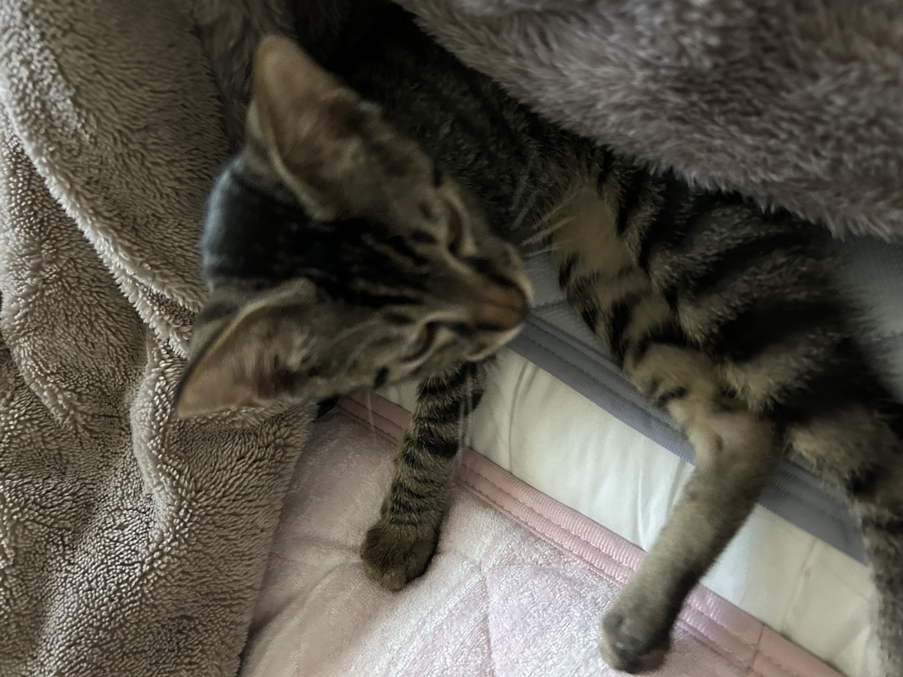

3日間の夏の思い出
~遊び半分と勉強半分~

Aug. 11 Aug. 12
Aug. 12
Day 3: ジブリパークとスターバックス本店
なかなかチケットが取れないジブリパークへ。初めてだったので圧倒され、 細かい展示や懐かしさがあった、スターバックス本店では、いつも飲んでいるものではなく、食べ物や雰囲気も 高級感があり普段体験できない広さでご飯を食べれて貴重な体験だった。
もっと読む~遊び半分と勉強半分~

Aug. 11
Aug. 12
なかなかチケットが取れないジブリパークへ。初めてだったので圧倒され、 細かい展示や懐かしさがあった、スターバックス本店では、いつも飲んでいるものではなく、食べ物や雰囲気も 高級感があり普段体験できない広さでご飯を食べれて貴重な体験だった。
もっと読む